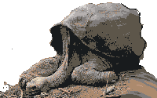

control hot keys: left=a right=d -z=w +z=s jumpleft=q jumpright=e
.o0po.. . .oooOO.0o@oOO@@0Ooo.,o"On June 24, 2012, at 8:00 A.M. local time, Galapagos National Park director Edwin Naula announced that Lonesome George had been found dead by Fausto Llerana" - wikipedia
